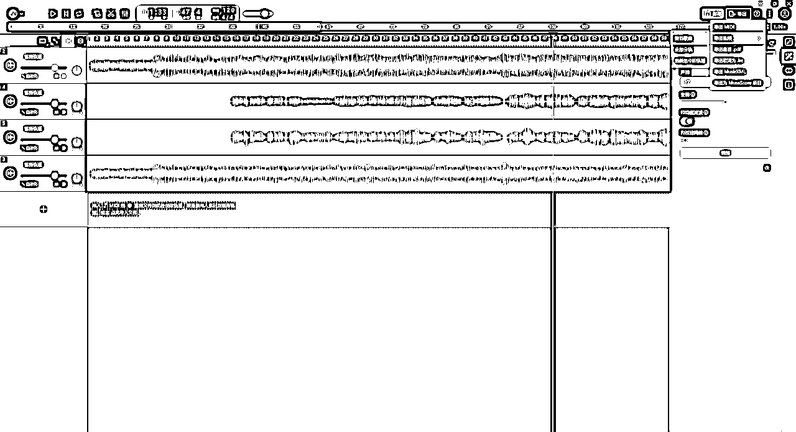
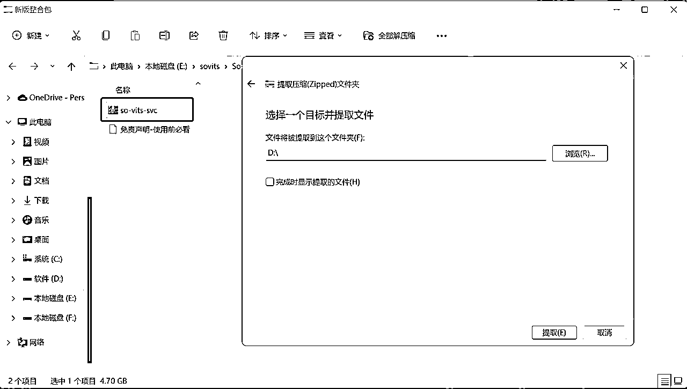
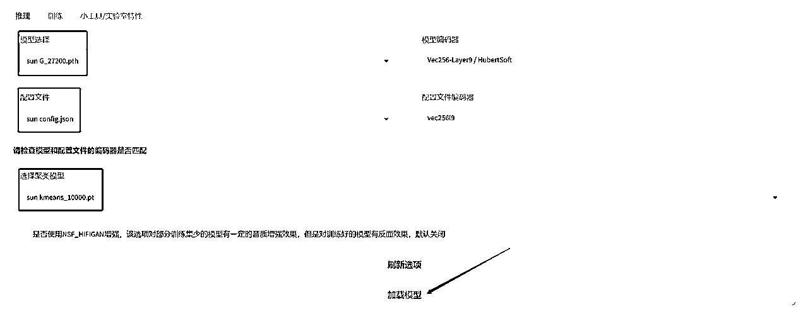
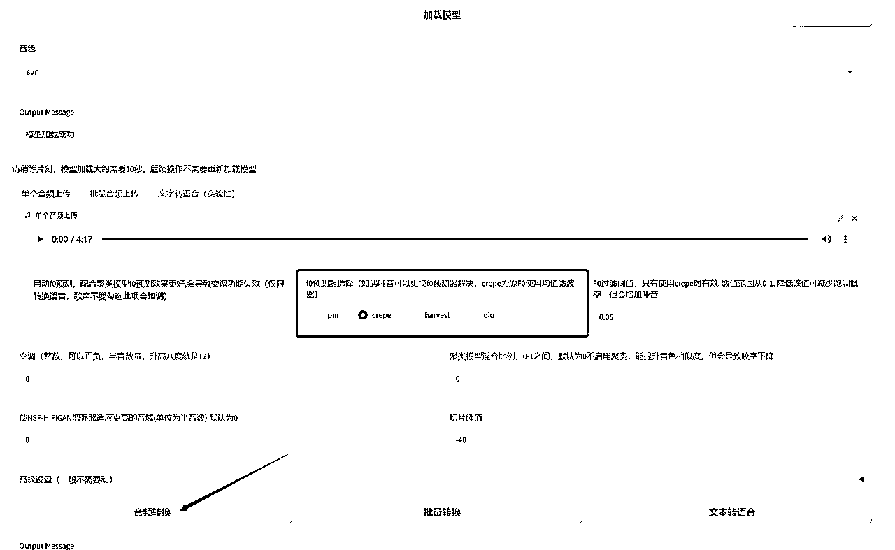

来源：https://ry5hwpuf7b.feishu.cn/docx/Un9idqf5go3vSfxhw9tcF6z1nme
《火爆全网的AI孙燕姿！超详细干货教程，让你也能做出AI声音克隆！》
大家好，我是吴东子，用奶奶都能听懂的方式分享可以落地实操的干货
我的所有资料都在公众号「吴东子AI」
最近AI孙燕姿火爆全网，我自己也跑了一遍全流程，然后写了一个教程分享给大家
文章里面有一站式制作AI孙燕姿的方法，还包含了训练声音模型的教程
让大家除了AI孙燕姿外，还能做一个AI自己，让你的声音可以唱任何你喜欢的歌曲
同时每一步都是手把手教学，大白话讲解，确保你能听懂，照着做也能做出来
另外，所有软件的安装包、整合包，甚至孙燕姿的声音模型
都已经打包好放在网盘分享给大家！
本作品仅作为娱乐目的发布，旨在让大众更快掌握AI相关应用
文章中的音乐使用AI合成技术，视频中演唱人声并非孙燕姿本人，如有侵权告知删除
严禁抄袭搬运，势必追诉到底！
最近这段时间，AI孙燕姿可以说是火爆全网了
在B站，一首AI孙燕姿演唱的《发如雪》就有180多万的播放量，其他视频也期期百万播放
在抖音，一个AI孙燕姿的演唱合集有1600多万的播放
那AI孙燕姿究竟是什么呢？
AI孙燕姿就是：
将大量孙燕姿本人的声音喂给AI，AI自动学习之后形成了一个声音的模型，然后用这个模型去唱别人的歌，出来的歌曲就真的跟孙燕姿翻唱了别人的歌一样
知道AI孙燕姿是什么之后
我们就知道如果我们自己要做一首AI孙燕姿演唱的歌曲
就要先做出一个孙燕姿的声音模型
但炼模型是相对比较困难，需要有好一点的电脑配置，还要花大量的时间给AI学习
但是也不用担心
网上已经有大神将炼好的模型分享出来了
我们直接借用别人的模型，也能生成自己的AI孙燕姿
而且我最近还发现了一个软件
在上面可以傻瓜式的生成出来一首AI孙燕姿的歌曲
总结一下上面所说的
就是目前我们制作一个AI孙燕姿有三种方法：
1.用傻瓜式软件，一键式生成AI孙燕姿
2.用别人的模型，做自己的AI孙燕姿
3.自己炼一个模型来制作AI孙燕姿
接下来就给大家分享这三种方式的详细制作流程
我们先看最简单的最快的方法
这里我们用到的是一个叫TuneFlow的软件
在这一个软件里面，我们就可以直接生成出来一首AI孙燕姿的歌曲
而且只要三步简单操作就可以完成：
1.导入要演唱的歌曲，分离歌曲里面的人声和伴奏
2.把原歌曲的人声换成孙燕姿的声音
3.导出一首孙燕姿歌声+伴奏的新歌曲
现在我们就做一首AI孙燕姿唱的《后来》
以这个为例子，看看具体的操作步骤
首先先下载软件
点击下面的链接下载软件TuneFlow
下载好了之后用邮箱注册账号，然后登陆
网页端是不能用的，必须要下载桌面版才能制作AI孙燕姿
https://www.tuneflow.com/editor
软件下载好了之后，我们就可以导入一首要AI孙燕姿演唱的歌曲
先在音乐软件（酷狗、网易云等）上面下载一首歌曲
我这里下的是刘若英的《后来》
下载的音质越高越好
这时候还会出现一个问题
像这些需要VIP才能下载的歌曲，下载出来的格式是用不了的
我们还有把格式转换一下
点下面链接就可以进行格式的转换（网易云音乐也可以）
https://kgm.worthsee.com/
要唱的歌准备好了，就可以把它导入到软件里了
点击“新建项目”开始创作
进来之后会有一个默认的新建轨道，这个对我们制作AI孙燕姿是没什么用的，可以选择删掉（也可以不删，没什么影响）
鼠标右键点击左边栏目——点击“删除轨道”
然后我们把刘若英的《后来》拖到轨道里面，或者直接点击导入文件上传
接下来就把这首歌里面人的声音和伴奏给分离开来
鼠标右键点击音频轨道
“运行插件”——“选中的片段”——点击“智能音频分轨”
点击右边的“启用”，然后就会自动分离音频
这里要稍微等一下
如果没办法运行，就要把音频切割成几个一分钟左右的片段
再每一段单独分离音频
切割音频的方法：
中间长长的那一条线可以拖动进度条，最上面可以看到目前进度条的时间
我们把进度条拖到1分钟左右，然后点击绿色的轨道，选中它
按“Ctrl+E”就可以切割音频
同样的方法，把整首歌切成几段
运行完了之后，会多出来两条轨道，一条是人声，一条是伴奏
前面我们把音乐里刘若英的声音和伴奏分离出来了
现在就是要把刘若英的声音换成孙燕姿的声音
在新增的两条轨道里面，我们要先找到刘若英纯唱歌的声音
可以点左边的“单”字来听单独某一个轨道（“静”是把这条轨道静音）
鼠标右键点击人声的轨道
“运行插件”——“选中的片段”——“智能变声器”
看到右边的“声线”，点击就可以换声音
目前可以换的声音还比较少，“YZ”就是孙燕姿的声音
然后点击“启用”

处理完了，我们的界面又多了一条轨道
可以单独听一下哪一条是孙燕姿声音的轨道
然后把其他轨道都静音
只留下孙燕姿的声音轨道和伴奏
这样就可以听到AI孙燕姿唱《后来》啦！
试听一下觉得没问题就可以导出啦
这里是导出：孙燕姿的声音+原来歌曲的伴奏
点击右上角的“导出”——“导出音频”——“整首歌曲”
注意：导出之前要先把其他轨道静音，只留下孙燕姿的声音轨道和伴奏！！！
否则导出来的音乐就是全部轨道结合到一起的声音

最后点击“导出”就可以啦！
大家可以听下导出后的效果
这个就是我们用第一种方法生成出来的AI孙燕姿
它直接在一个软件平台上面就可以完成所有的操作
但有一个缺点就是：哪怕这个软件是下载到我们电脑的，但它用的是官方的服务器，很多人同时在用的话，可能有些功能就没法正常用了
在我写这篇文章之前，就因为官方的显存爆了，导致没办法进行音频分离
如果上面的软件没法用了
我们可以用接下来说的这一个方法
这个方法就是用别人炼好的模型来生成一个AI孙燕姿
可以分为以下三个步骤，每一个步骤需要用到不同的软件
1.选一首要演唱的歌曲，分离歌曲里面的人声和伴奏：用到的软件是 Ultimate Vocal Romover（后面简称uvr）
2.把原歌曲的人声换成孙燕姿的声音：用到的软件是 So-VITS-SVC（后面简称 sovits）
3.将孙燕姿歌声+伴奏合并到一起：用到的软件是 剪映
可能细心的小伙伴就会发现，这三个步骤跟前面第一个方法的步骤是差不多的
那为什么还要用这第二个方法呢？
那是因为uvr和sovits这两个软件是直接安装在我们自己电脑上的
能不能正常运行只取决于我们自己的电脑配置
那就不会因为软件官方出现问题，而影响到我们的使用
接下来就让AI孙燕姿唱一首李荣浩的《乌梅子酱》
以这个为例子，看看具体的操作步骤
首先我们选好了一首让AI孙燕姿演唱的歌曲：乌梅子酱
接下来就是分离这首歌的音频，包含了下面3个步骤：
uvr软件的压缩包放在网盘了（网盘链接在文章的最后面）
大家保存《1.UVR5》到自己电脑，先双击下载uvr的应用程序
具体安装步骤可以看图
安装好了之后，把文件夹里面的压缩包解压到 刚刚下载的uvr里面的models文件夹
这样我们的软件就安装好啦！
现在打开刚下载好的软件进行音频分离
在“Select Input”里面放歌曲《乌梅子酱》
“Select Output”选择分离后的人声和伴奏放到哪个文件夹
其余的参数按照图片里的去调就可以了
如果你的“GPU Conversion”没办法勾选也没关系，只是导出会慢一点
参数调好了点击“Start Processing”就会开始处理
这样我们就把伴奏和人声分离开来了
文件夹里面后缀是“Instrumental”的是伴奏
后缀是“Vocals”的就是人唱歌的声音

现在听人声的那一条音频，声音是还不够干净的
我们还要单独把人声重新处理一遍
我们这次导入的是刚刚分离出来的纯人声的音频
注意注意！！也就是后缀带有“Vocals”的那个音频
下面的参数要按照图片重新修改
点击“Start Processing”
等音频处理好了之后，我们的文件夹会多一个后缀带有两个“Vocals”的音频
这时候我们的音频就处理好啦！
经过刚刚的处理，我们得到一条比较干净的李荣浩唱《乌梅子酱》的音频
现在我们就要把李荣浩的声音换成孙燕姿的声音
这一步也分为了三个步骤：
这里我们用到的是B站羽毛布団的整合包，整合包点击链接就可以下载
下载链接里的《2.so-vits-svc》，保存到自己电脑
然后解压sovits的压缩包到D盘或者E盘
不要装到C盘！！小心C盘会被占满！！

找到解压后的文件夹，双击“启动webui”就可以打开sovits的主界面
刚下载好的sovits里面是没有声音模型的
我们要自己把孙燕姿的模型放进去
在网盘里面我已经给大家准备了一个孙燕姿的声音模型
下载并且解压网盘里的《3.AI孙燕姿》
里面有三个文件，复制“sun G_27200”和“sun Kmeans_10000”这两个文件
来到sovits文件夹，找到logs文件夹里的44k文件夹，把这两个文件粘贴进去
再把剩下的“sun config”那个文件复制到sovits文件夹中的configs文件夹
这样我们AI孙燕姿的声音模型就安装好啦！
接下来就是将李荣浩的声音换成孙燕姿的声音
打开sovits进行声音的替换，在这个软件里面叫做“推理”
左边的三个框框都要点进去选择模型
然后点击“加载模型”

看到模型加载成功就可以上传音频了
这里上传的音频是我们处理过的干净的人声，也就是后缀带有两个“（Vocals）”的那条音频

音频上传成功之后继续往下设置
“f0预测器”选择成crepe，其他参数不用动
最后点击“音频转换”

转换好了试听觉得没问题就可以点右边的三个点，把音频下载下来
我们下载下来的是只有孙燕姿唱《乌梅子酱》声音的一条音频
要变成一首完整的音乐，还要让这个音频加上音乐的伴奏
这里用到的剪辑软件就是剪映，大家可以点击链接下载
https://www.capcut.cn/
下载好了之后打开剪映，点击“开始创作”
导入前面分离出来的《乌梅子酱》的伴奏，也就是后缀带有“Instrumental”的那条音频
还有刚刚在sovits导出的孙燕姿的声音
把导入的两条音频拖到下面的编辑框里面
一定要把开头对齐！！
最后点击右上角的“导出”就可以保存音频了
如果需要的话还可以导入一些照片和视频，这样就变成一个MV了
网盘里还给大家分享了3个黑胶唱片转动的视频素材，让你更好地做视频
这样就完成啦！！！
大家可以听一下效果
前面的两个方法用的都是别人的模型
现在第三个方法就是自己炼一个声音模型出来
然后用自己炼出来的模型去生成一首歌曲
分为两个大的步骤就是：1.炼模型 2.生成歌曲
炼模型对电脑配置是有要求的
所以在正式开始之前，我们要确保自己的电脑符合以下的配置：
1.是NVIDIA的显卡(也就是N卡)
2.显卡的专用内存6GB以上
如果是A卡或者显存不够的朋友们，我们可以去云端训练
也就是租用别人的电脑，远程控制别人配置好的电脑
云端训练可以看这个视频
https://www.bilibili.com/video/BV1324y1572U/?vd_source=6f836e2ab17b1bdb4fc5ea98f38df761
电脑配置符合要求的朋友们，接下来我们就要开始炼模型啦
炼模型可以分为两步：
1.制作素材库
2.训练模型
接下来我们就做一个孙燕姿的声音模型
以这个为例子，看看详细的操作流程
AI要模仿孙燕姿的声音，我们就要给它孙燕姿本人的声音素材
这个素材就相当于是它的学习资料
有了学习资料，它就会自己进行学习
制作一个素材库，包括了以下三个步骤：
素材库的质量非常重要！！
质量越高，出来的模型声音才越像本人
素材的来源：
如果是做某个歌手的模型，那我们就可以找他们的歌曲、访谈、采访、电视剧等等..
最简单直接的办法就是下载足够多的歌曲，因为访谈和电视剧之类的还要先把别人的声音剪掉
如果是做自己的声音模型，那就把自己唱歌的声音录下来
素材的要求：
1.时长：至少在30分钟以上
2.素材要尽量的干净清晰（至少后期能处理干净）
3.不要为了凑素材时长加一些低质量的声音！！
这里给大家做演示，我就只收集了孙燕姿的两首歌曲
素材收集好了之后我们就要把这些素材处理干净
保证处理之后的素材只有人的声音，不要有bgm、其他人说话的声音或者杂音
提取声音用的还是这个软件：Ultimate Vocal Romover（uvr）
①分离伴奏
首先把歌曲里面的伴奏去掉
具体操作步骤：
1.把我们收集到的声音素材放到一个文件夹里面
2.把整个文件夹拖动到最上面的框框里
3.选择一个保存音频的文件夹
4.参数按照图片中的设置
5.最后点击“Start Processing”
②让声音变得更加干净
上面的操作是把歌声里面的人声和伴奏分离开来
下一步就是把人声处理得更加干净
具体操作步骤：
1.打开前面输出的文件夹，把后缀有“vocals”的音频拖动到一个新的文件夹里面
2.把整个文件夹拖动到uvr最上面的框框里
3.选择一个输出文件夹
4.按照图片重新设置参数
5.点击“Start Processing”
这样我们干净的声音素材就处理好啦！
现在素材处理干净了，但是一条音频有4~5分钟
我们需要把这些音频全部切成3~15秒左右的小片段
这样才能保证模型训练的质量和速度
在处理之前，我们还要把刚刚处理好的音频文件改一下名
这些文件名不能包含中文
最好最用数字字母、下划线
把前面处理好的后缀带有两个“vocals”的音频名字改成“sun1”

打开sovits，在最新版本里面更新了一个音频切片的工具
在这里我们就可以直接把音频切成小片段
复制文件夹的保存路径
粘贴路径到sovits，然后点击“加载原始音频”
显示成功加载之后，复制一个空文件夹的路径到“输出目录”
这个文件夹是用来放切成小片段的音频的
然后点击开始切片

看到成功就是已经切片成功啦！
这时候空文件夹里面就会多了很多只有3~15秒的音频

到这里我们就做好素材库的准备工作啦
接下来才是我们的重头戏——开始炼丹（炼模型）
先把我们准备好的学习资料（素材库）喂给AI
把刚刚保存切片的文件夹重命名，用英文字母命名
然后复制整个文件夹，放到sovits文件夹里的“dataset_raw”文件夹
注意注意！！是整个文件夹放进来，而不是只把音频切片复制进来
确保素材库放在正确的文件夹里面
现在就要设置一下训练的参数
接下来打开sovits
在“训练”的界面开始训练我们的模型
点击“识别数据集”，文本框就会出现我们刚刚制作的素材库名字
接下来选择
“编码器”——vec768l12
“f0预测器”——crepe
然后点击“数据预处理”
处理的信息会在下面的框框里显示
等进度条到100%就处理好了
点击“清空输出信息”

接下来就是设置参数
注意“批量大小”的参数，6G显存就要填“4”，不然会出现显存报错
全部参数设置好了之后就点击“写入配置文件”
显示配置写入完成就点击“从头开始训练”
接下来AI就会自己进行学习了
当我们开始训练，就会弹出一个黑色框框，这个框框就是我们的训练日志
训练的信息都会显示在这里，我们要实时注意
这一步就不用我们再去操作什么了，只要观察这个黑色框框就可以
训练的时候会占用大量的显存
所以训练的时候就不要用电脑去做一些消耗电脑显存的事情了（比如打游戏）
看到每训练200步就会出现一条比较长的信息
“step：200”就是炼了200步的意思
这里面我们只要关注最后面的“reference_loss”的值
这个数字越小，说明模型训练的越好，模型的声音越接近本人
loss值是40多：残次品，不能用
loss值是30多：勉强能用
loss值是20多：已经很不错了
如果loss值是10多，那就是一个很好的模型了
我这里素材只有2首歌和只炼了200步，所以出来是残次品
一个好的模型训练1万步左右就差不多了
具体还是关注loss值，达到你们的预期（一般10多20多）就可以暂停
大家做好耐心等待的准备
暂停的方法：1.按Ctrl+C 2.关掉黑色框框
训练完回到推理的页面就可以看到我们炼出来的模型，G后面的数字就是训练的步数
祝大家炼丹成功！！
练好模型之后我们就可以拿来生成一首歌曲啦
制作的方法跟文章的第四部分是一样的：
1.选好要唱的歌，分离歌曲的人声和伴奏
2.替换人的声音
3.将新生成的声音和伴奏合并起来
忘记了的小伙伴就自己倒回去看啦
这里就不再演示了
好了，以上就是我们这篇文章的全部内容，每个方法都有利有弊，大家根据自己的实际情况选择
如果你对AI感兴趣的话，可以关注我的公众号：吴东子AI，也欢迎分享给你身边想学AI技术的朋友
里面有我之前发过的所有文章，之后也会持续给大家更新实用的AI干货教程
我是吴东子，用奶奶都能听懂的方式，分享可以落地实操的干货，我们下篇文章再见！
软件的安装包、AI孙燕姿模型：
链接：https://pan.baidu.com/s/1plB1sdKpzvnf_m8ZiDE-3Q?pwd=0g1q
提取码：0g1q
吴东子AI账号简介：https://ry5hwpuf7b.feishu.cn/wiki/space/7283841978071072772?ccm_open_type=lark_wiki_spaceLink